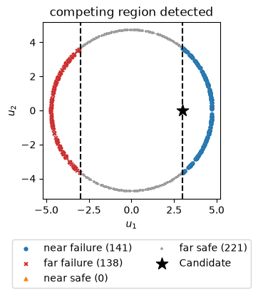
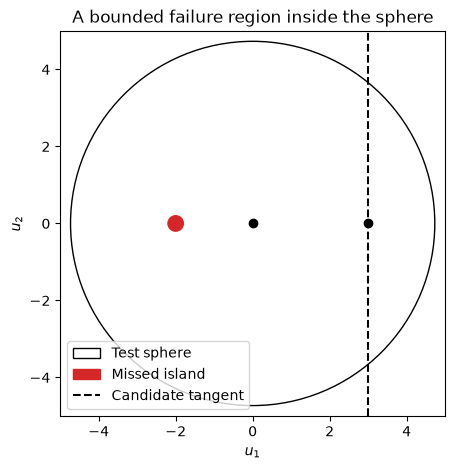

Download notebook · Download runnable bundle
Dependencies: PySTRA core.
Checking a FORM design point#
Use the Strong Maximum Test to look for competing failure regions and examine what the diagnostic can miss.
Before you start: FORM and standard normal design-point geometry.
Problem and approach#
FORM convergence does not establish that its design point represents every important failure region. The strong maximum test samples an enlarged sphere in independent standard normal space and reports failure points outside the candidate’s vicinity.
This tutorial checks a single half-space, detects a second failure region, visualizes the four point groups, and constructs a bounded region that the sphere misses. See the theory, User guide, and OpenTURNS formulation.
The test is a diagnostic, not a failure-probability estimator or a certificate of global optimality.
[1]:
import numpy as np
import pandas as pd
import matplotlib.pyplot as plt
from scipy.stats import norm, t, expon
from scipy.integrate import quad
import pystra as ra
Check a converged FORM design point#
For \(g=3-X\) with independent standard normals, FORM is exact. Its candidate is \((3,0)\), and every failure point on the test sphere lies in the candidate’s vicinity.
[2]:
model = ra.StochasticModel()
model.add_variable(ra.Normal("X", 0, 1))
model.add_variable(ra.Normal("Y", 0, 1))
form = ra.FORM(model=model, limit_state=ra.LimitState(lambda X, Y: 3 - X))
form_result = form.run()
check = ra.StrongMaximumTest(form, confidence_level=0.99, rng=2026)
check_result = check.run()
assert not check_result.has_competing_points
pd.Series(
{
"FORM beta": form_result.design_index,
"FORM Pf": form_result.failure_probability,
"Sphere points": check.point_number,
"Radius": check.radius,
"Nominal confidence": check.confidence_level,
"Evaluations including origin and candidate": check_result.n_limit_state_evaluations,
"Status": check_result.message,
}
)
[2]:
FORM beta 3.0
FORM Pf 0.00135
Sphere points 18
Radius 4.730711
Nominal confidence 0.990313
Evaluations including origin and candidate 20
Status No competing failure region detected; this is ...
dtype: object
Detect another failure region#
Now take \(g=9-X^2\). The candidate \((3,0)\) represents the right failure tail, but there is an equally important tail at \(X<-3\). We supply this boundary point explicitly so the example does not depend on a local optimizer’s initial direction. An explicit candidate must use the model’s selected standard coordinates; the test checks a safe origin and boundary residual but does not optimize the candidate.
[3]:
two_tail = ra.StrongMaximumTest(
model=model,
limit_state=ra.LimitState(lambda X, Y: 9 - X**2),
design_point=[3.0, 0.0],
point_number=500,
rng=2026,
)
two_tail_result = two_tail.run()
assert two_tail_result.has_competing_points
print(two_tail_result.message)
print("One tangent half-space Pf:", norm.sf(3))
print("Exact two-tail Pf:", 2 * norm.sf(3))
pd.Series(
{name: int(mask.sum()) for name, mask in two_tail_result.regions.items()},
name="Sphere points",
)
Competing failure region detected
One tangent half-space Pf: 0.0013498980316300933
Exact two-tail Pf: 0.0026997960632601866
[3]:
far_failure 138
near_failure 141
far_safe 221
near_safe 0
Name: Sphere points, dtype: int64
The near/far split is \(u\cdot(u^*/\beta)>\beta\). It is a geometric classification; raw magnitudes of \(g\) cannot rank importance because positive rescaling changes the values without changing the failure event.
[4]:
fig, ax = ra.plotting.plot_strong_maximum(two_tail_result)
ax.axvline(3, color="black", linestyle="--")
ax.axvline(-3, color="black", linestyle="--")
ax.legend(loc="upper center", bbox_to_anchor=(0.5, -0.2), ncol=2)
plt.show()
competing_x = two_tail_result.points("far_failure", space="x")
assert np.all(competing_x[:, 0] < -3)
print("First physical restart candidates:\n", competing_x[:5])

First physical restart candidates:
[[-4.5270396 1.3731495 ]
[-3.80994576 2.8042718 ]
[-3.38890103 3.30075399]
[-3.61517294 -3.05125412]
[-3.98398312 -2.55098129]]
Figure. Sphere samples for the two-tail limit state include failure points far from the supplied positive design point, revealing the competing negative tail.
Understand confidence and cost#
importance_level is a normal-density ratio \(\varepsilon\), and accuracy_level is a sphere enlargement factor \(\tau>1\). Neither is a tolerance on FORM’s probability error. The nominal confidence is the probability of hitting a reference spherical cap of the specified size with independent samples.
The required count grows with dimension. Construction computes the budget before any limit-state evaluations; max_points rejects an oversized request. PySTRA rounds the count upward to meet the requested nominal confidence.
[5]:
budgets = []
for dimension in [2, 5, 10, 20]:
m = ra.StochasticModel()
for i in range(dimension):
m.add_variable(ra.Normal(f"X{i}", 0, 1))
diagnostic = ra.StrongMaximumTest(
model=m,
limit_state=ra.LimitState(lambda **x: 3 - x["X0"]),
design_point=[3.0] + [0.0] * (dimension - 1),
importance_level=0.15,
accuracy_level=3,
confidence_level=0.99,
max_points=1_000_000,
rng=2026,
)
budgets.append(
{
"Dimension": dimension,
"Sphere points": diagnostic.point_number,
"Cap probability": diagnostic.cap_probability,
"Nominal confidence": diagnostic.confidence_level,
}
)
pd.DataFrame(budgets)
[5]:
| Dimension | Sphere points | Cap probability | Nominal confidence | |
|---|---|---|---|---|
| 0 | 2 | 18 | 0.227101 | 0.990313 |
| 1 | 5 | 111 | 0.040987 | 0.990395 |
| 2 | 10 | 1297 | 0.003547 | 0.990033 |
| 3 | 20 | 125521 | 0.000037 | 0.990000 |
A bounded failure island the sphere cannot detect#
Add a small circular failure island centered at \((-2,0)\) with radius 0.2:
The origin remains safe. The island’s nearest boundary is at radius 1.8, closer than the candidate at radius 3. But the entire island lies inside the sampled sphere, so no number of samples on that sphere can find it. A negative test therefore cannot certify the candidate.
[6]:
def island_lsf(X, Y):
return np.minimum(3 - X, (X + 2) ** 2 + Y**2 - 0.2**2)
island_check = ra.StrongMaximumTest(
model=model,
limit_state=ra.LimitState(island_lsf),
design_point=[3.0, 0.0],
point_number=500,
rng=2026,
)
island_check_result = island_check.run()
assert island_check.radius > 2.2
assert island_lsf(-2, 0) < 0
assert not island_check_result.has_competing_points
print("Diagnostic:", island_check_result.message)
print("Known missed failure point: (-2, 0); candidate: (3, 0)")
fig, ax = plt.subplots(figsize=(5, 5))
ax.add_patch(plt.Circle((0, 0), island_check.radius, fill=False, label="Test sphere"))
ax.add_patch(plt.Circle((-2, 0), 0.2, color="tab:red", label="Missed island"))
ax.axvline(3, color="black", linestyle="--", label="Candidate tangent")
ax.scatter([0, 3], [0, 0], color="black")
ax.set(
xlim=(-5, 5),
ylim=(-5, 5),
xlabel="$u_1$",
ylabel="$u_2$",
title="A bounded failure region inside the sphere",
)
ax.set_aspect("equal")
ax.legend(loc="lower left")
plt.show()
Diagnostic: No competing failure region detected; this is not a certificate
Known missed failure point: (-2, 0); candidate: (3, 0)

Figure. A small circular failure island lies inside the test sphere and does not intersect it. Sphere sampling therefore misses this bounded failure region.
Apply the diagnostic to system components#
System FORM already accounts for distinct component tangent planes. Apply the test separately to the retained component FORM objects to look for additional regions within each component. These checks do not validate the whole system probability. Non-Gaussian copulas must use normal Rosenblatt coordinates for the current test.
[7]:
system = ra.SeriesSystem(
[ra.Component("a", lambda X: 3 - X), ra.Component("b", lambda Y: 3 - Y)]
)
system_form = ra.SystemFORM(model, system)
system_form_result = system_form.run()
checks = {}
for component in system_form.components:
record = system_form_result.component_results[component.name]
diagnostic = ra.StrongMaximumTest(
model=model,
limit_state=component.as_limit_state(),
design_point=record.design_point_u,
options=system_form.options,
point_number=200,
rng=2026,
)
checks[component.name] = diagnostic.run()
assert all(not item.has_competing_points for item in checks.values())
pd.Series(
{name: item.message for name, item in checks.items()}, name="Component diagnostic"
)
[7]:
a No competing failure region detected; this is ...
b No competing failure region detected; this is ...
Name: Component diagnostic, dtype: str
Far failure points can guide additional design-point searches; they are not already optimized design points. Inspect all four groups, vary the sphere geometry when appropriate, and compare with original-event simulation. A fresh instance with the same seed reproduces its samples; rerunning an instance advances its local generator.
Interpretation#
Far-failure points are candidates for restarting FORM. A test with no detected competitors does not establish that small bounded failure regions are absent.
Continue: User guide · API reference · Theory